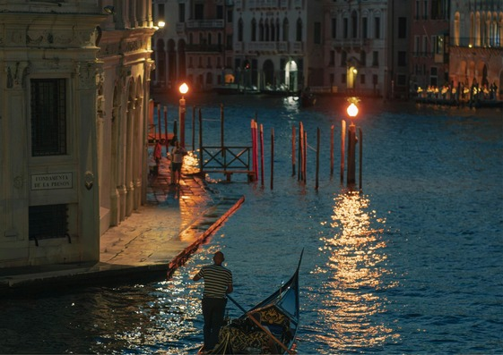
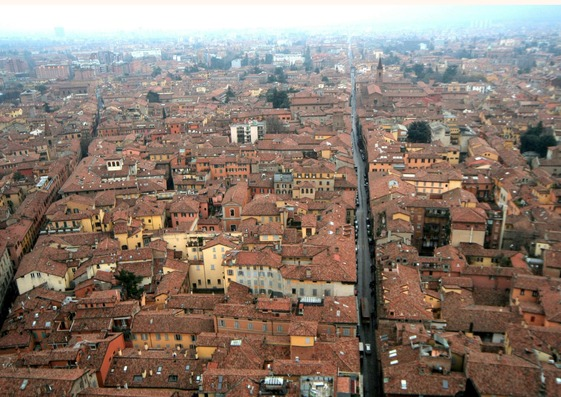

¡Italia Esencial: 10 Lugares Mágicos que Debes Explorar!
Roma
Milan
Napoles

Venecia
Florencia
Costa amalfitana
Cinque terre
Verona
Sicilia

Roma, la "Ciudad Eterna", es la capital de Italia y una de las ciudades más antiguas y fascinantes del mundo. Su rica historia, impresionante arquitectura y vibrante cultura atraen a millones de visitantes cada año.
Milán, la capital de la moda de Italia, es una ciudad vibrante conocida por su diseño, arte y cultura. Hogar de la famosa Catedral de Milán y la ópera La Scala, Milán ofrece una mezcla única de elegancia moderna y rica historia. La ciudad también es famosa por su escena de compras de lujo, su deliciosa gastronomía y su patrimonio artístico
Nápoles, una ciudad vibrante y llena de historia ubicada en la región de Campania, ofrece una mezcla única de cultura, gastronomía y belleza. Aquí tienes algunas de sus atracciones más destacadas:
Venecia, una ciudad única construida sobre el agua y ubicada en la región de Véneto, es famosa por sus canales, su rica historia y su arte. Aquí tienes algunas de sus atracciones más destacadas:
Florencia, la cuna del Renacimiento y capital de la región de Toscana, es una ciudad llena de arte, historia y belleza. Aquí tienes algunas de sus atracciones más destacadas:
La Costa Amalfitana, un tramo de costa italiano espectacular ubicado en la región de Campania, es famosa por sus pueblos pintorescos, paisajes impresionantes y ambiente lujoso. Aquí tienes algunas de sus atracciones más destacadas:
Cinque Terre, un conjunto de cinco pueblos de pescadores coloridos en la costa italiana, ubicado en la región de Liguria, es conocido por sus paisajes espectaculares, senderos de senderismo y encanto rústico. Aquí tienes algunas de sus atracciones más destacadas:
Verona, la ciudad del amor inmortalizada por Shakespeare en *Romeo y Julieta*, ubicada en la región de Véneto, es una ciudad llena de historia, arte y romanticismo. Aquí tienes algunas de sus atracciones más destacadas:
Sicilia, la isla más grande del Mediterráneo y una región autónoma de Italia, es una tierra de contrastes con una rica historia, paisajes diversos y una cultura vibrante. Aquí tienes algunas de sus atracciones más destacadas:
Bolonia, la capital de Emilia-Romaña, es conocida por su rica historia, su impresionante arquitectura medieval y su deliciosa gastronomía. Aquí tienes algunos de sus lugares más destacados: